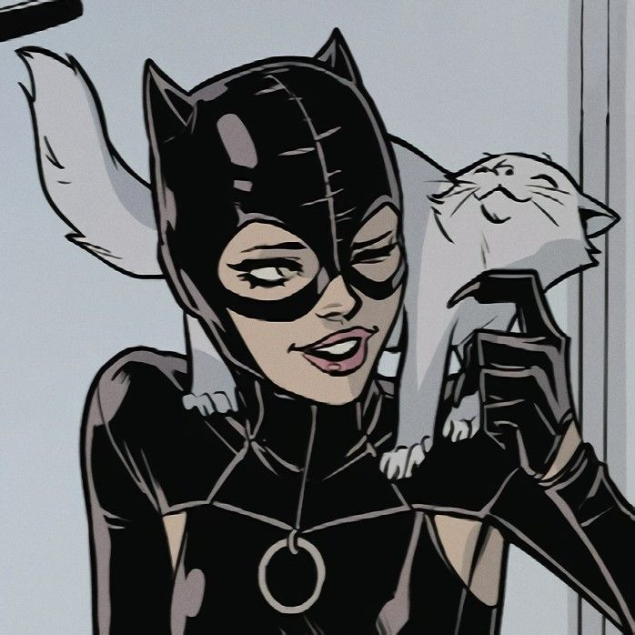
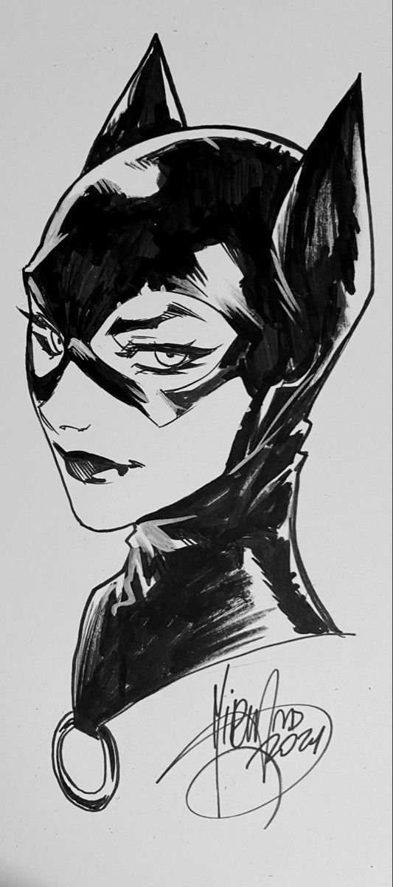

Selina es una experta ladrona que creció en las peligrosas calles de Gotham al quedar huérfana. Durante ese periodo, aprendió a robar y pelear para sobrevivir, y más tarde lo convirtió en su oficio. Una de las interpretaciones más importantes de su origen tiene lugar en
Batman: Año uno (1987), donde Frank Miller no solo relata su versión del primer encuentro entre Batman y Catwoman, sino que establece que Selina era
mujer de la calle que más tarde, e inspirada por el hombre murciélago, se convierte en Catwoman y comienza así su carrera como ladrona.
Desde 2016, Catwoman aparece de forma regular en la serie Batman del autor Tom King, donde Bruce y Selina mantienen una relación sentimental e incluso celebraron (o no) su propia boda, hecho que marcó un hito en la historia de ambos.
 | habilidades |
| experta en el combate mano a mano |
| gran agilidad y flexibilidad |
| Ocupa un latigo como arma |